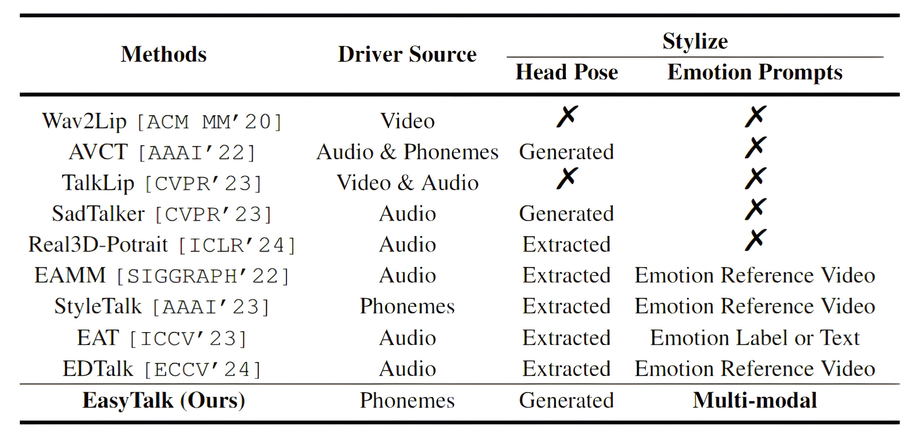

Audio-driven talking head video generation methods to be compared.
Speech-driven talking head generation has became a trending topic recently. However, expressing emotion on generated talking heads is still challenging due to the heterogeneity of different modals that are required to be handled properly during the generation. To enable effective facial expression control when generating talking heads, we propose the EasyTalk, a two-stage generation framework supporting the control of facial expression by emotion signals from images, text, or speech. Specifically, we separate the generation approach into two stages: Speech-to-Motion and Motion-to-Video, leveraging ARKit coefficients as the intermediate representations. We propose to utilize visemes as emotion-invariant representations to guide lip movements, thereby compelling the model to learn expression-related motions from the emotion inputs. We further align emotional signals from different modalities by cross-modal contrastive learning for more effective control. Extensive experiments show that our method achieves new state-of-the-art measured by lip-sync and realistic metrics and enables efficient facial expression controls.
Illustration of the proposed model.
Audio driven cases without multi-modal style control.
Audio-driven talking head video generation methods to be compared.
The quantitative results on dataset A and B.
User study results.
The potential misuse of lifelike digital human face generation, such as for creating fraudulent identities or disseminating misinformation, necessitates preemptive ethical measures. Before utilizing these models, it is crucial for organizations to integrate ethical guidelines into their policies, ensuring the application of this technology emphasizes consent, transparency, and accountability. Furthermore, it is recommended to embed visible or invisible digital watermarks in any generated content.
Please be aware that all videos on this page are algorithmically generated from publicly available sources and are intended solely for academic demonstrations and algorithm comparisons. Any other form of usage is prohibited. Besides, if required by the original image owner or in the case of misuse of the models, the images, models, and codes associated with this project may be removed at any time.